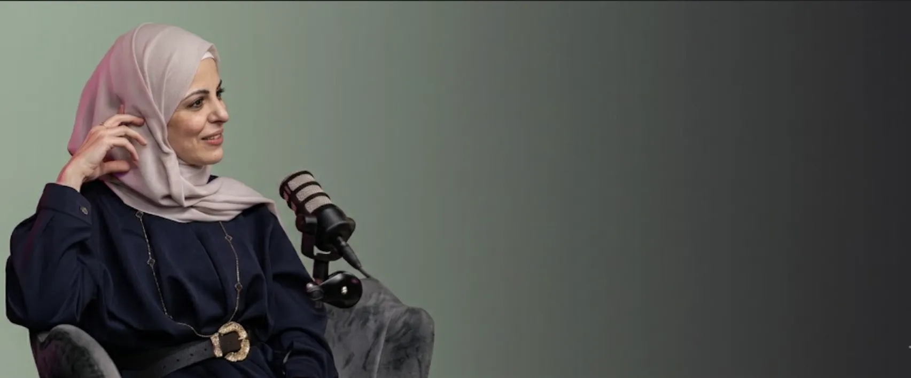

رمضان بلا سكر.. إليك تجربتي وكيف تأثرت بشرتي وصحتي
في إحدى عزومات رمضان على بوفيه مفتوح قامت صديقتي لتناول الحلويات بعد الانتهاء من الإفطار وسألتني...
متابعة القراءة
رولا دايت هو المكان الذي ستحقق فيه غاياتك الصحية وجسدك الرشيق

تعلّم الفرق بين الجوع الحقيقي والجوع العاطفي، وكيف تكسر دوامة الأكل الانفعالي وتبني علاقة صحية مع الطعام.

نقطة انطلاقك نحو حياة أصح — اكتشف أسس التغذية الصحيحة وكيف تضع هدفاً ذكياً وتحققه خطوة بخطوة.

دليلك الشامل لبناء عادات غذائية متوازنة تناسب حياتك — بدون حرمان، بدون تعقيد، ونتائج حقيقية تدوم.

افهم تكيس المبايض من جذوره — الأسباب، الأعراض، الخيارات الطبية والغذائية، وكيف تحسّن صحتك وخصوبتك.


نصائح تغذوية تطبيقية
في إحدى عزومات رمضان على بوفيه مفتوح قامت صديقتي لتناول الحلويات بعد الانتهاء من الإفطار وسألتني...
متابعة القراءة
ماذا سأختار أجندة للعام الجديد؟ كيف سيكون شكلها وتقسيماتها الداخلية؟ هذه الأسئلة التي تمر ببال كل من يهوى التخطيط...
متابعة القراءة
المهمة المستحيلة للأمهات "اللانش بوكس" أن تكوني أماً يعني أن تبدأي نهارك بأول مهمة...
متابعة القراءةتواصل مع الاختصاصية رولا واحصل على استشارتك الشخصية الآن
تواصل عبر واتسابتقييمات حقيقية من Google Maps